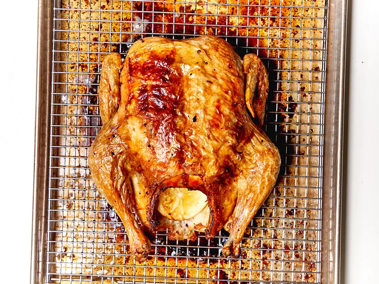

Whole Roasted Chicken

Description
Chef Roscoe Hall's whole roasted chicken with butter, lemon, and thyme is the best there is! You'll be making it over and over again!
Ingredients
- 1 (3 pound) whole chicken, giblets removed
- salt and freshly ground black pepper to taste
- 1/2 cup butter, or more as needed
- 10 sprigs thyme
- 1/2 lemon
- 1 tablespoon extra virgin olive oil
Steps
- Preheat the oven to 425 degrees F (220 degrees C).
-
Pat chicken dry with paper towels. Season heavily with salt and pepper, on the outside and inside the cavity.
Stuff the cavity with 1/4 cup (1/2 stick) butter and thyme sprigs. Squeeze 1/2 lemon into the cavity and drop lemon half inside.
-
Rub the remaining 1/4 cup butter underneath the skin. Rub the skin with 1 tablespoon olive oil or additional melted butter.
Place chicken on a wire rack in a roasting pan.
-
Bake chicken, uncovered, in the preheated oven until an instant read thermometer inserted into the thickest part of the chicken
reads at least 160 degrees F (70 degrees C), about 45 minutes.
- Remove from the oven and baste with drippings. Allow to rest for about 30 minutes before serving.